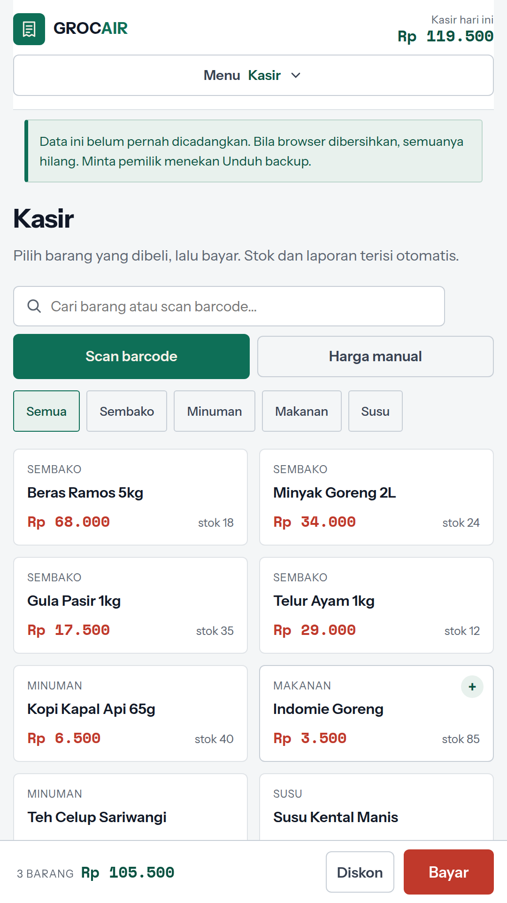

Browser, tanpa backend
HTML, CSS, JavaScript, dan IndexedDB. Service worker menyimpan aset untuk penggunaan offline setelah pemuatan pertama. Barcode dibaca lokal melalui BarcodeDetector atau ZXing.
STUDI KASUS / APLIKASI WEB & ANDROID
Grocair mencatat penjualan, menghitung stok, dan merangkum laporan langsung di perangkat. Dibangun untuk alur belanja harian, bukan koneksi yang selalu stabil.
Coba demo kasirTanpa akun. Data contoh siap dicoba.

01 / MASALAH & PENDEKATAN
Warung membutuhkan pencatatan yang tetap bisa dipakai saat internet putus. Grocair menempatkan data di perangkat: transaksi tersimpan lokal, stok baru berkurang setelah pembayaran berhasil.
Konsekuensinya jelas: data tidak otomatis berpindah perangkat. Backup JSON dan pemulihan disediakan agar pemilik bisa menjaga datanya sendiri.
02 / IMPLEMENTASI
HTML, CSS, JavaScript, dan IndexedDB. Service worker menyimpan aset untuk penggunaan offline setelah pemuatan pertama. Barcode dibaca lokal melalui BarcodeDetector atau ZXing.
Capacitor membungkus aplikasi yang sama menjadi APK. Aturan akses pemilik/kasir, stok, backup, dan model freemium tetap menjadi bagian produk asli.
Validasi data masuk, pembatasan izin peran, CSP, backup berchecksum, dan pengujian otomatis. Tidak ada analytics atau unggahan gambar kamera.
03 / COBA LANGSUNG
Demo menggunakan data fiktif di browser Anda. Perubahan tetap tersimpan hingga direset. Kamera membutuhkan izin dan HTTPS; cetak mengikuti kemampuan browser.
Buka demo GrocairDemo bukan layanan pembayaran. Untuk pemakaian nyata, siapkan backup rutin.